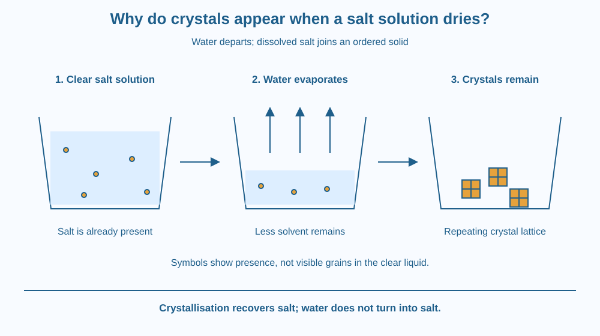

Explain how a clear salt solution can leave solid crystals as water evaporates. Identify crystallisation, distinguish crystal growth from making a new substance, and predict how the amount of water influences what remains dissolved. Do not expect crystal growth to finish during a five-minute setup.
A drop of salty water dries on a plate. Yesterday it looked like a transparent liquid. Today a pale mark remains. Under good lighting, parts of that mark may have straight edges rather than the rounded outline of the original drop.
Where did the solid come from? The plate did not manufacture salt, and the water did not change into salt. The salt was already present in the clear liquid. Drying made it visible again in a different arrangement.
The interesting question is how dissolved material becomes an ordered solid instead of remaining hidden in the liquid.
Water acts as a solvent, and dissolved salt is a solute. Together they make a solution. Clear does not mean empty: a solution can contain dissolved material too small to see as separate grains.
Common salt is mainly sodium chloride. In a crystal, sodium and chloride ions occupy a repeating arrangement called a crystal lattice. The ions are electrically charged particles. At this level, you only need the idea of a regular arrangement extending through the solid.
When salt dissolves, its ions become dispersed and surrounded by water molecules. The separate grains disappear from sight, but the salt has not vanished. There is still dissolved material available to form a solid later.
In an open dish, water can leave the liquid surface as water vapour. Under ordinary room conditions, sodium chloride does not leave with the water at an appreciable rate. As water is lost, more dissolved salt is present relative to the amount of remaining water.
At a particular temperature, only a limited amount of salt remains dissolved in a given amount of water at equilibrium. As evaporation continues, the solution can reach conditions where a solid phase forms and grows. A tiny starting region, a nucleus, provides an ordered arrangement to which more ions can join.
This is crystallisation: dissolved material becomes an ordered solid. Existing crystals, surface irregularities or tiny particles can provide starting sites. Growth is influenced by evaporation rate, disturbances and impurities. These factors help explain why real dried drops produce uneven patterns.
The geometry of the sodium chloride lattice helps explain its familiar cube-like crystals. However, a kitchen observation may show crusts or crowded clusters rather than perfect cubes. Table salt can include additives, and crystals can overlap. An imperfect shape does not mean the basic mechanism has failed.
Crystal growth from salt water does not require creating a new chemical substance. Salt can be recovered by removing the solvent. If clean water is added later, the salt can dissolve again. That recovery is different from a reaction that makes a different substance from the original ingredients.
Imagine tiles scattered in a wide tray. As available space changes, tiles begin joining an orderly pattern already started in one corner. The ordered patch becomes bigger as additional pieces find places along its edge.
The tiles represent dissolved ions, and the ordered patch represents a crystal. The analogy cannot show the electrical interactions or water surrounding the ions. It does capture a useful distinction: growth adds material to an existing ordered solid.
Make a three-box sketch: clear solution, less water with crystal starting sites, and visible crystals. Keep a salt symbol in every box. Remove only some water symbols between boxes.
The SVG uses three stages arranged left to right. The first dish contains blue liquid with small amber salt symbols. The second has a lower liquid level and water-vapour arrows above it. The third contains several square crystal outlines.
The salt symbols are schematic. A dissolved ion is far too small to be drawn at this scale, and individual grains are not floating unchanged in the clear solution. The symbols simply track the presence of dissolved material.
Labels below the dishes describe water loss and ordered solid growth. The diagram does not promise that every dried sample forms a perfect cube.

A white ring can appear where salty water repeatedly dries near a tap or container. Such deposits may contain several minerals, so a white mark is not automatically pure sodium chloride. Its location still suggests a useful question: what dissolved material was left behind when water departed?
Coastal salt production also uses water removal, but this lesson focuses on the microscopic growth of an ordered solid rather than the design of salt pans. Kitchen observations show the same distinction between the water that leaves and the solute that remains.
Crystals are also important in product manufacture. Controlling their growth can affect grain size and how easily a material can be handled.
Use table salt, room-temperature drinking water, a spoon and two clean shallow dishes. No heating is needed. Do not eat the samples after the investigation.
The five minutes are for setup. Check later, possibly the following day or beyond. Drying time depends on the amount of water, exposed area, air movement and room conditions. Do not report an exact waiting time as a universal result.
Suppose a salt crystal begins growing in a dish. Then someone adds enough clean water to make the liquid much more dilute. Does the crystal have to keep growing simply because it already exists?
Explain how the surrounding liquid can now favour some solid dissolving instead. A crystal's presence tells you what formed earlier; it does not guarantee that the present conditions still support growth.
What is the repeating arrangement inside a crystal called?
Answer: B — A lattice is the repeating arrangement of particles within a crystal.
Why can salt appear as a solid after salt water dries?
Answer: C — Evaporation removes solvent and can allow dissolved salt to crystallise.
What may happen if enough clean water is added to a small salt crystal?
Answer: A — If the liquid is sufficiently dilute, salt can pass from the solid into solution.
Design a picture sequence that prevents two common mistakes: “clear liquid contains no salt” and “water turns into salt.” Show the water and salt separately at each stage using different symbols.
Then predict what changes if the same salt solution is divided between a broad shallow dish and a narrow deep cup. State what is held equal and explain why exposed surface area may affect drying time without changing the identity of the salt.
A crystal's straight faces can emerge without anyone cutting or carving them. Their larger shape reflects repeated arrangements at a scale too small to see. Crystal growth links the invisible organisation of matter with a visible object, although crowded crystals and impurities often hide the clean geometry in an everyday sample.
As water leaves a salt solution, dissolved salt can join an ordered crystal lattice; the salt was present before the crystals became visible.